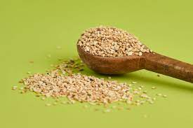

EL MOLE
INTRODUCCION
Su término proviene del náhuatl molli o mulli y refiere a diferentes tipos de salsas preparadas a partir de chiles y especias, cuya elaboración desde tiempos ancestrales era a base de mezclas de diferentes salsas condimentadas, pero que con el paso del tiempo se fue transformando, refinando y adoptó nuevos ingredientes.
El origen del mole se da con las culturas prehispánicas, donde los habitantes de los pueblos originarios mezclaban varios chiles con semillas de calabaza, hierba santa y jitomate para crear una salda a la que llamaban mulli
Como dato curioso en la época de la Colonia, debido a la fusión gastronómica entre las culturas prehispánicas con las europeas, surgieron una gran variedad de moles.
ingredientes
- 7 chiles anchos

- 6 chiles mulatos

- 6 chiles pasilla

- 3 chiles chipotle o morita
- 1/2 cebolla o 1 cebolla chica

- 1 cabeza de ajo

- 2 jitomates
- 1/2 cucharadita de anís
- 1 rajita de canela
- 75 gr de ciruela pasa

- 50 gr de pepita de calabaza peladas
- 50 gr de almendras
- 100 gramos de cacahuate
- 50 gr de ajonjolí

- 3 clavos de olor
- 1/2 piloncillo
- 2 tortillas duras
- 1 pieza de chocolate en barra
- 1 cuchara sopera de manteca de cerdo
- 1 plátano macho

- 1 pieza de bolillo duro
- Semillas de cilantro
- Medio litro de caldo de pollo

PREPARACION
- Lava y quita la vena de los chiles, después ponlos sobre el comal para tostarlos, pero sin quemarlos o el mole se amargará. Ya que estén asado, ponlos en una olla con agua hirviendo, déjalos remojar por 20 minutos hasta que se suavicen, una vez suavizados licúalos y guárdalos.
- En otra olla hierve jitomate, ajo y cebolla. Mientras en un sartén dora las pasas, semillas de calabaza, cacahuate, almendras, las tortilla en trozos, el bolillo en rebanadas y el plátano macho.
- Ya que están sazonados, licúalos junto con la canela, clavo, anís, ajonjolí y agrega agua hasta obtener una mezcla homogénea. Posteriormente calienta una cazuela de barro con la manteca, la barra de chocolate y el piloncillo, hasta que se deshagan.
- Una vez que la consistencia se haga líquida se agrega la espesadura y la salsa de chiles, usando un colador. Se agrega poco a poco el caldo de pollo y la sal, y se deja sazonar durante 45 minutos para que el chile se cueza y arroje su sabor. Por último, se tuesta el ajonjolí para colocarlo por encima del platillo.